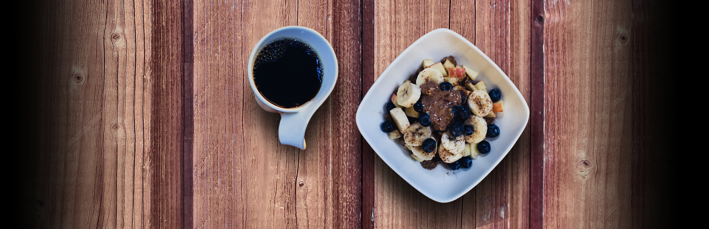

RECETAS DULCES
LEMÓN PIE
Ingredientes para la masa
- 100g de manteca blanda
- 1 yema
- 2 cucharadas de azúcar
- 2 cucharadas de agua fría
- 1 cucharada de vinagre
- 1 taza de harina
Ingredientes para el relleno
- 1 taza de agua
- 1 taza de azúcar
- 2/3 de taza de jugo de limón
- 2 cucharadas de fécula de maíz
- 4 yemas
- 4 cucharadas de manteca
- Ralladura de 1 limón
Ingredientes para el merengue
- 4 claras
- 200g de azúcar
Procedimiento
- La masa. Aplastar con el tenedor la manteca, la yema, el azúcar, el agua y el vinagre, hasta obtener una pasta. Incorporar de a poco la harina hasta que se forme un bollo.
- Aplastar ligeramente la masa con el palote enharinado, colocarla en una tartera desarmable enmantecada y enharinada y terminar de estirarla aplastando con los dedos enharinados. Pincharla con un tenedor. Recortar los bordes en forma prolija.
- Cocinar la tarta en horno caliente hasta que la masa esté sequita y suavemente dorada. Retirar del horno y dejar enfriar.
- El relleno. Poner en una cacerola el agua, el azúcar, el jugo de limón y la fécula. Mezclar con batidor de alambre. Llevar al fuego y cocinar mezclando continuamente hasta que la preparación hierva y espese. Retirar del fuego y verter sobre las yemas previamente batidas.
- Volver a poner la mezcla en la cacerola y llevar nuevamente al fuego, revolviendo siempre hasta que espese un poco más. Retirar la mezcla del fuego, tamizarla en un bol y, mientras esté caliente, mezclar la manteca y la ralladura.
- Una vez tibia la crema, rellenar la tarta precocida, alisando la superficie.
- El merengue. Realizar un almíbar con el azúcar y una cucharada de agua. Batir las claras hasta espumarlas. Cuando el almíbar llegue los 118°, verterlo en fomra de hilo sobre las claras, mientras se baten. Continuar el batido hasta el bowl se sienta frío.
- Estacionar la tarta en la heladera hasta que la crema esté bien firme. Retirar la tarta de la heladera y cubrirla totalmente con el merengue. Para que quede "doradita", meterla en el horno un minuto. Enfriar.
DONAS
Ingredientes para la masa
- 1 cucharada postre de Levadura en polvo
- 3 cucharadas de postre de Azúcar morena
- 2 cucharadas soperas de Aceite vegetal
- 2¼ tazas de Harina (315 gramos)
- 1 cucharadita de Sal
- 1 taza de Leche (240 mililitros)
Ingredientes para el relleno
- 2 tazas de Leche (480 mililitros)
- 1 unidad de Huevo
- 5 unidades de Yemas de huevo
- ¼ taza de Almidón de maíz (31¼ gramos)
- ½ taza de Azúcar (100 gramos)
- 30 gramos de Mantequilla
- 1 cucharadita de Extracto de vainilla
Procedimiento
- Empezaremos a preparar la masa de las donas rellenas caseras calentando la leche hasta que esté tibia, luego mézclala con la levadura.
- Añade el aceite y el azúcar y mezcla bien todo. Cuando los ingredientes se hayan integrado por completo agrega la harina y la sal, y sigue mezclando para continuar con la elaboración de las donas rellenas de crema.
- Usa la batidora por 10 minutos a velocidad media y vacía la mezcla en una fuente engrasada. Tápala con un paño y deja reposar por 45 minutos aproximadamente, hasta que doble su tamaño y puedas dar forma a las rosquillas o donas con crema pastelera.
- Despliega la masa para donas rellenas sobre una superficie enharinada y estírala. Dale forma con las manos y córtala en porciones del tamaño que quieres que sean tus donas rellenas de crema pastelera. Luego, fríelas en aceite muy caliente por pocos minutos. Deben dorarse por ambos lados. Cabe destacar que nosotros no hemos realizado ningún agujero en el centro, pero si lo prefieres puedes hacerlo.
- Ahora prepara el relleno de crema pastelera para rellenar las donas. Primero, bate los huevos en un recipiente, agrega el almidón y el azúcar moreno hasta obtener una mezcla suave, integra bien todos los ingredientes y agrega por último la leche tibia.
- Lleva la mezcla al fuego y remueve de forma constante. Mantén la llama a un nivel medio y cuando la preparación espese retírala y sigue revolviendo por unos minutos más.
- Por último, integra la mantequilla y la vainilla a la mezcla y continúa removiendo. Deja reposar la mezcla y luego utiliza una manga para rellenar las donas con crema pastelera. Puedes espolvorear azúcar glass y canela molida por encima simplemente o hacerles una cubierta de chocolate. Recuerda que puedes variar el relleno a tu gusto, puedes usar dulce de leche, mermeladas u otros.
FLAN CASERO

Ingredientes
- 1 Litro de leche
- 8 huevos
- 250 gr de azúcar
- 1 Cda de esencia de vainilla
- 200 gr de azúcar (para el caramelo)
Procedimiento
- Lo primero que vamos a preparar, es el caramelo. En esta oportunidad vamos a hacer un caramelo seco dentro del mismo molde del flan.Colocar el molde sobre la hornalla y agregar de a poco el azúcar. A medida que se funde ir cubriendo con más azúcar hasta completar los 200 Gr. Controlar que el azúcar se funda de manera pareja. Para cuando alcance un color caramelo y toda el azúcar este fundida, retirar del fuego y mover el molde con mucho cuidado hasta cubrir todas las paredes con caramelo.
- En una olla, calentar el litro de leche junto con la mitad del azúcar. Mezclar para disolver el azúcar y retirar del fuego antes de que llegue a hervir.
- En un bowl colocar los 8 huevos, la esencia de vainilla y la otra mitad del azúcar. Batir suavemente para desligar los huevos.
- Incorporar la leche a los huevos. Verter la preparación en el molde, colocar el molde dentro de una fuente para horno y agregar agua caliente.
- Hornear durante aproximadamente 60 minutos a fuego bajo (160ºC)..
- Una vez cocido, dejar enfriar y refrigerar por 6 horas antes de desmoldar.
- Antes de desmoldar, colocar el molde dentro de una fuente con agua caliente. Esto lo hacemos para ayudar a desmoldar más fácilmente.
TIRAMISU
Ingredientes
- 450 g de queso Mascarpone
- 160 g azúcar
- 7 yemas de huevo
- 3 claras de huevo
- Cacao puro en polvo
- 250 g café
- 200 g bizcochos de soletilla o savoiardi
- 100 g una copita de brandy o amaretto
Procedimiento
- Preparamos el café y dejamos que se enfríe. Montamos las claras a punto de nieve, reservamos en la nevera.
- En otro cuenco montamos las yemas junto con el azúcar hasta triplicar su volumen y añadimos el queso Mascarpone poco a poco hasta conseguir una masa suave, sin grumos y esponjosa.
- Incorporamos las claras a punto de nieve con movimientos envolventes hasta unir perfectamente todos los ingredientes, reservamos.
- Vertemos un poco de café en un recipiente y un poquito de brandy (opcional), vamos bañando poco a poco los bizcochos de soletilla, montamos una primera capa con los bizcochos en el molde que hayamos elegido.
- Cubrimos con la mitad de la crema que tenemos reservada y sobre la crema volvemos a añadir bizcochos de soletilla que habremos pasado primero por el café.
- Por último añadimos la crema y espolvoreamos cacao en polvo sobre toda la superficie del tiramisú.
- Llevamos a la nevera mínimo 4 horas, aunque os recomendamos dejarlo durante toda la noche para que los sabores se asienten, estará mucho más rica.